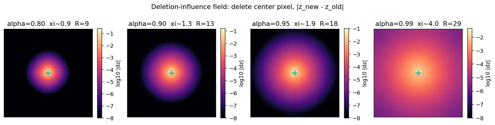
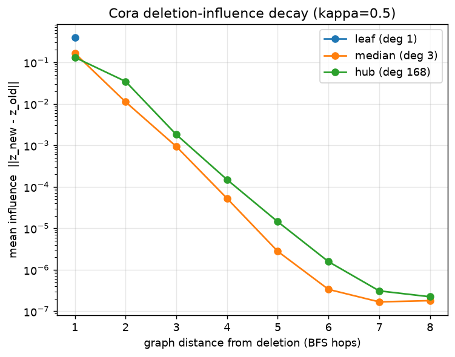

Set-DEQ Notes · #5
Geng raised unlearning as a direction worth looking into, and it lines up with a property we have chased since Note #1: an equilibrium model's fixed point is, under contraction, unique and history-independent. The folklore hope is seductive — if you delete a data point and re-solve, you land on exactly the fixed point you would have reached had the point never existed, so deletion is exact and possibly cheap. The graph-unlearning literature (GNNDelete, GIF, certified unlearning) only ever achieves approximate removal, so "exact for free" would be a real edge.
This note is the honest accounting of that hope. The headline is not the one we started with. We set out to show "equilibrium models leak less," and a careful experiment killed that claim. What survived is narrower, cleaner, and — we'd argue — more defensible than the privacy and federation stories from earlier probings: the equilibrium buys you one specific channel of forgetting, exactly and locally, and provably does not buy you another. Knowing which is which is the contribution.
When a model is trained on a graph that contains node v, information about
v ends up in two physically different places, and "unlearning" means
something different in each.
v's
features flow through message passing into the representations of other nodes. This
residual lives in the activations / equilibrium state, and it is recomputable: it exists
only because v is in the current input.
v's gradient
shaped the weights. This residual is baked into the parameters and does not go
away when you change the input.
The binary question "did you remove v from the model?" is a trap, because it conflates
these. Re-solving the equilibrium cleans Channel 1 perfectly — but it cannot touch Channel 2,
since the weights already absorbed v during training. Any honest comparison has to
score the two channels separately. That single reframe is what turned a muddled "are DEQs
more private?" question into two crisp, measurable ones.
Before any learned model, we isolate Channel 1 on the simplest possible structure, where the math is transparent. Take a 4-connected grid and run a screened mean equilibrium:
Here α ∈ (0,1) is the contraction factor. This map is a
Banach contraction for any α < 1 — its fixed point is unique
unconditionally, no training and no path-independence recipe required. (A useful clarifier
from our own past notes: the static uniqueness that licenses exact deletion comes for free
from contraction; the trainable path-independence of Anil et al. addresses a different, warm-start
channel, and is not needed here.)
Deletion = remove a node from the graph and re-solve. The object of interest is the deletion-influence field: how much every other node's representation moved because one node was deleted.

α) → a tighter bright dot. At α=0.99 the influence
floods the whole grid. The screening length ξ is set entirely by the contraction.
Binning influence by distance from the deleted pixel gives a clean geometric decay
∝ rd with a screening length ξ, and a truncation radius
R beyond which influence is below 10−4 of its peak:
| α (contraction) | ξ | R(10−4) | nodes touched / total | truncated re-solve error |
|---|---|---|---|---|
| 0.80 | 0.9 | 9 | 361 / 3721 | 6.1e−6 |
| 0.90 | 1.3 | 13 | 729 / 3721 | 4.2e−6 |
| 0.95 | 1.9 | 18 | 1369 / 3721 | 3.3e−6 |
| 0.99 | 4.0 | 29 | 3481 / 3721 | 1.9e−5 |
The last column above is the point. If we re-solve only the nodes within radius
R of the deletion and freeze the rest at their old values, we recover the
exact full-deletion fixed point to tolerance — the error is the decayed tail
we chose to ignore, not a different equilibrium. This is where uniqueness does its work: a unique
fixed point means "freeze the far field" is a bounded-error exact method, not a heuristic. Growing
the grid at fixed α=0.90:
| N (grid) | R | nodes touched | speedup (N / touched) | truncated error |
|---|---|---|---|---|
| 441 | 9 | 361 | 1.2× | 6.8e−5 |
| 3,721 | 13 | 729 | 5.1× | 4.2e−6 |
| 10,201 | 13 | 729 | 14.0× | 1.7e−6 |
O(R²) — independent of N — via a truncated warm-started
re-solve. A feedforward network has no fixed point to warm-start: to update any affected
prediction it must re-run a full forward pass. The equilibrium's edge is sharpest exactly where
the deleted node sits in a region the weights barely memorized (a "new region"), because there
Channel 2 is negligible and only Channel 1 matters.
Scope condition, stated plainly: this requires ρ < 1 with margin. At
α=0.99 (near the unscreened harmonic limit) the screening length grows with the
grid, R swells to cover half the nodes, and the N-independence is gone. The same
contraction that gives uniqueness gives the screening; lose it and you lose both at once. On
irregular graphs the analogue caveat is degree: deleting a hub has a longer-range influence than
deleting a leaf, so the O(R²) claim is for locally-coupled deletions, not hubs.
The grid is the homogeneous best case. To see what survives on a real, irregular graph we move to
Cora (2,708-node citation network, mean degree 3.9, one hub of degree 168,
small-world). We train an IGNN-aligned graph-DEQ — clipped spectral norm, Picard solver,
phantom-gradient, matching TorchDEQ's own IGNN recipe — freeze it, delete a node (cut its
edges, renormalize the graph) and re-solve. Influence is now measured against BFS graph
distance, and we add two axes the grid could not show: the deleted node's
degree, and the contraction cap κ. Because training
saturates the clip (the optimizer pushes ‖W‖ to the cap for
expressiveness — IGNN's edge-of-well-posedness behavior), κ effectively
is the contraction ρ, so it serves as the screening knob.

κ=0.5), per degree stratum. Geometric
decay (~10× per hop) on a real graph; the hub decays slightly slower than the median node.
A leaf has a single neighbor, so it is one point.
At strong contraction (κ=0.5, test acc 0.679) deletion is local
and exact; at weak contraction (κ=0.9, test acc 0.759) the
locality collapses — the same edge behavior as the grid's α=0.99, now with
an accuracy axis attached. R* is the truncation radius at which the warm-started
re-solve matches the exact full deletion to 10−4:
| κ (acc) | stratum | degree | R* | nodes touched | speedup (N/touched) | trunc. error |
|---|---|---|---|---|---|---|
| 0.5 (0.679) | leaf | 1 | 1 | 2 | 1354× | 0 |
| median | 3 | 3 | 122 | 22× | 1e−4 | |
| hub | 168 | 4 | 1540 | 1.8× | 5e−5 | |
| 0.9 (0.759) | leaf | 1 | 1 | 2 | 1354× | 0 |
| median | 3 | 6 | 1658 | 1.6× | 5e−5 | |
| hub | 168 | 6 | 2284 | 1.2× | 5e−5 |
Three things confirm and three things sober. Confirmed: influence decays
geometrically with graph distance on a real graph; the truncated re-solve is exact
(≤10−4) everywhere; and the degree ordering is exactly as predicted
— leaf « median « hub, with the degree-168 hub genuinely non-local (turning
§3b's asserted caveat into a measured one). Sobering: there is a real
accuracy↔locality tradeoff (0.68 vs 0.76 across the κ sweep); near the edge the
locality win vanishes; and the speedups are modest.
R reaches most of the graph. Channel-1 deletion is therefore
exact everywhere, but cheap only on large-diameter / geometrically-local graphs
(where the grid's big wins came from). On a small-world graph you buy exactness, not speed. The
defensible claim is the conjunction stated precisely: exact + local-influence always; large
cost savings only when the graph has diameter to spare and the deleted node is not a hub.
The hope was that an equilibrium model — whose "depth" lives in an iterated, recomputable solve rather than in stacked distinct weight layers — would memorize less in its weights, so Channel 2 would be smaller for a DEQ than for a feedforward GNN. We measured it.
Setup: a synthetic stochastic-block-model graph, node classification, with label noise injected on a fraction of the training nodes (the noisy/outlier nodes are the most memorized and most attackable — the Feldman long-tail). A node is a "member" iff it was in the training loss; members and non-members are drawn identically, so any membership signal reflects memorization, not distribution shift. We score three channels with a membership-inference AUC (0.5 = no leak):
‖∇θ loss(node)‖,
the white-box gradient-norm attack (members have smaller gradients — they're already fit);
A naive comparison (DEQ vs a 4-layer GCN) showed the DEQ leaking far more in the weights
(0.73 vs 0.54). But the GCN had only reached train_acc = 0.87 while the DEQ hit
1.00: they were not at matched fit. The DEQ leaked more because it
memorized more — its effectively-infinite depth let it fit the noisy labels the
shallow GCN could not. That is a confound, not an architecture effect.
We gave the feedforward comparator residual connections and enough capacity/epochs to also reach
train_acc = 1.00, then compared at equal memorization (5 seeds, paired, per-sample
gradients via torch.func):
| condition | model | train acc | test acc | WEIGHT-channel AUC |
|---|---|---|---|---|
| noisy labels | DEQ (1.7k params) | 1.00 | 0.777 | 0.733 ± 0.08 |
| noisy labels | FF-GCN (26k params) | 1.00 | 0.722 | 0.692 ± 0.08 |
| clean labels | DEQ | 1.00 | 1.000 | 0.550 ± 0.02 |
| clean labels | FF-GCN | 1.00 | 0.996 | 0.521 ± 0.02 |
A fair worry: even if a DEQ cleans Channel 1, does it open new attack surfaces a feedforward net lacks — convergence speed, Jacobian spectrum, basin choice? We measured the most obvious one, per-node convergence speed, as a membership signal.
| channel | feature | membership AUC |
|---|---|---|
| output | prediction margin | 0.63 |
| weight | gradient norm | 0.62 |
| dynamical | solve iterations | 0.50 (benign) |
Convergence speed carries essentially no membership signal (AUC 0.50; mean iterations identical for
members and non-members). The mechanism is reassuring: under strong contraction, convergence speed
is governed by the global spectral gap, not by any single node's training membership. So
the relocation is net-favorable — we make Channel 1 exact and cheap, and the new surface we
"open" is, at least on this axis, closed. (Caveat for follow-up: this should be re-tested near the
contraction boundary ρ→1, where per-node dynamics vary more and the channel
could come alive — the same edge-of-well-posedness regime that interests us elsewhere.)
The graph-unlearning room is crowded — GNNDelete (a trained repair operator with a neighborhood-influence loss), GIF (a one-step influence-function estimate), certified unlearning (provable but restricted to linear SGC) — and all of them are approximate weight edits targeting Channel 2. A keyword scan across six angles (MIA-on-DEQs, DEQ+unlearning, DEQ+differential-privacy, IGNN+unlearning, convergence side-channels) turned up nothing at the equilibrium intersection; even DEQ + differential privacy appears untouched. Two cautions, both of which we hold to: keyword absence is not proof — this needs a citation-graph pass and a gut-check from inside the DEQ subfield (Geng) before any "first" is claimed; and an empty cell is not automatically valuable.
Given the null in §4, we make no claim about weights. The defensible position is a composition, not a competition:
O(R²) cost — which a feedforward network cannot do cheaply. The
weight channel (Channel 2) is architecture-agnostic and orthogonal: if you need it
removed, you bolt on GIF / GNNDelete-style surgery exactly as you would for any GNN. We do not
worsen any measured channel in the process. The contribution is the clean separation, the exact
cheap Channel-1 mechanism, and the honest map of what the equilibrium does and does not buy.
κ axes measured. The sharpened finding: exactness everywhere, but large cost
savings only on large-diameter graphs.ρ→1.A note on temperament: this is the first thread where the experiment overruled the story rather than the reverse. The privacy and federation probings earlier were more exciting on paper and weaker under testing; this one is less grand but the surviving claim is one we can actually stand behind. That trade — a smaller, true result over a larger, shaky one — is the one worth making.